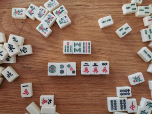
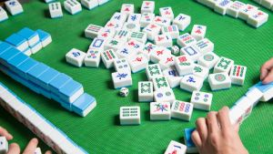
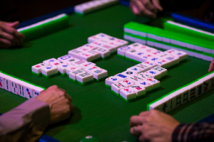
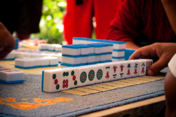

Strategies & Tips
Playing mahjong, the traditional Chinese tile-based game, involves both strategic thinking and tactical decision-making. Like any game, practice improves your ability to recognize patterns, anticipate opponents' moves, and make better strategic decisions overall. Here are some strategies that can help improve your gameplay:
1-4-7 Defense
Since most players will be searching for tiles that would form a three-tile straight, if someone discards a "4",
you can be fairly safe to assume that they will not be needing a "1" or "7".

Pay attention to the discard pile
Keep track of which tiles have been discarded. This helps you figure out what tiles are left that you could draw.

Pay attention to others
In most games, players discard their tiles neatly in front of them, making it really easy to identify what they do not need.
Pay attention to what tiles opponents discard. This can give you clues about their hand and help you adjust your strategy accordingly.

Know when to pivot
Keep your hand flexible by not committing too early to one specific hand pattern. Stay adaptable to changes in the tiles you draw and those discarded by others.
Recognize when others have the same tiles you're looking for, and be willing to give up searching for certain tiles.
